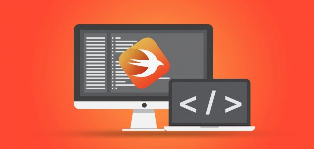
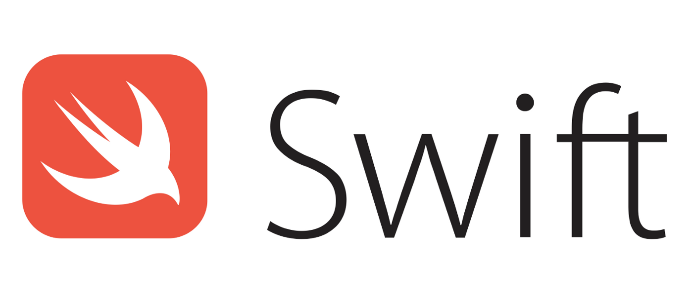

Swift programlama dili 2014 yılında Apple’ın tanıttığı Apple platformları için yazılım geliştirmeye yarayan açık kaynak kodlu bir yazılım dilidir.
Bu dilden önce Apple ekosistemi için Objective-C ile yazılımlar üretilmekteydi. Bu yüzden Apple şirketi kendine ait olan bir programlama dili istedi. Sonrasında Swift’i piyasaya sürdü.
Swift programlama dili Objective-Cye göre daha az kod yazarak aynı işlemleri yapmaya imkân tanımaktadır.
Çok güçlü, çok hızlı ve öğrenmesi son derece de kolay olan bir dildir. Swift programlama dili syntaxı kolay bir dil olduğundan dolayı hiç kod yazmamış bir tarafından bile kolayca anlaşılabilmektedir.
Diğer programlara göre çalışma hızı bakımından olduk güçlüdür. Swift’in bu denli güçlü özelliklere sahip olması onu oldukça popüler bir dil yapmıştır.
2018den bu yana en çok tercih edilen 5 programlama dili arasındadır. Nesne tabanlı bir programlama dilidir. Swift oldukça kalabalık bir kullanıcı topluluğuna sahiptir.
Swift Programlama Dili Öğrenmek
Öğrenilmesi oldukça kolay olan bu kodlama dilini daha iyi anlayabilmeniz adına bir takım ipuçları vereceğiz. Verdiğimiz ipuçları doğrultusunda programlama dilini daha da kolay öğrenebileceksiniz.
Swift Programlama Dili Hangi Platformlarda Yer Alıyor?
Bu programlama dilini kullanarak iOS, iPadOS, macOS, watchOS, tvOS ve hatta Linux işletim sistemleri için uygulamalar ve yazılımlar geliştirilebilmektedir.
Bu platformalar için geliştirebileceğiniz yazılımların sonu bucağı yoktur. Örneğin Swift ile Siri için mükemmel bir şekilde çalışan bir yapay zekâ uygulamaları yapabilirsiniz.
Swift’i kullanarak uygulama geliştirmek istiyorsanız bu iki uygulamayı kullanmalısınız;
Swift Programlama Dili İçin Xcode
Xcode hem yeni başlayanlar hem de profesyoneller için oldukça kullanışlı bir araçtır. Xcode aracılığı ile oldukça profesyonel bir şekilde iOS, iPadOS, watchOS, macOS ve tvOS işletim sistemleri uygulama ve yazılımları geliştirebilirsiniz.
Swift ile uygulama geliştirmek isteyen kişilerin ihtiyaç duyduğu en temel araçlardan birisidir. Xcode’du kullanmak isteyen kişiler App Store üzerinden indirip kullanmaya başlayabilirler.
Swift Programlama Dili İçin Playgrounds
İnteraktif ve eğlenceli bir şekilde öğrenmeyi seviyorsanız Playgrounds aracı tam size göredir.
Playgroundsun sunduğu kitapçıklar sayesinde kodlama bilgisi olmayan biri bile rahatlıkla Swift dilini öğrenmeye başlar üstelik kendi uygulamaları için mükemmel bir başlangıç yapar.
Aynı zamanda Türkçe dil destekli kütüphanesi bulunan bu araç İngilizce bilmeyenler için de uygundur. Kendinizi geliştirdikten sonra sizler de kendi kitapçıklarınızı bu platforma yükleyip diğer insanların faydalanması için yardımcı olabilirsiniz.
Apple’ın her sene düzenlediği Dünya Geliştiriciler Konferansına burslu bir şekilde katılmak istiyorsanız bir kitapçık hazırlamalısınız. Bu platforma Mac veya iPad cihazlar üzerinden de erişim sağlanabilmektedir. Bu uygulamaya erişmek istiyorsanız Xcode’da olduğu gibi yine App Store üzerinden indirip kullanabilirsiniz.
Swift Programlama Dilini Nereden Kolayca Öğrenebiliriz?
Swift programlama dilini öğrenmek istiyorsanız internette birçok kaynak bulunmaktadır. Açık kaynak kodlu bir program dili olmasından dolayı bu dil ile ilgilenen kişilerin kodlarını inceleyerek ve onlar ile fikir alışverişi yaparak bu dili öğrenebilirsiniz.
Aynı zamanda videolar izleyerek de bu dili öğrenebilirsiniz. Bunun için Youtube’dan ilgili dersleri takip edebilirsiniz. Ancak belli bir düzen içerisinde ilerlemek istiyorsanız Udemy üzerinden de küçük ücretler ödeyerek eğitim setleri alabilirsiniz.
Kolay bir şekilde öğrenebileceğiniz yazılım dilleri arasında yer alan Swifti siz değerli ziyaretçilerimiz için tanıttık. Bir başka öneri niteliğindeki içerimizde görüşmek üzere.